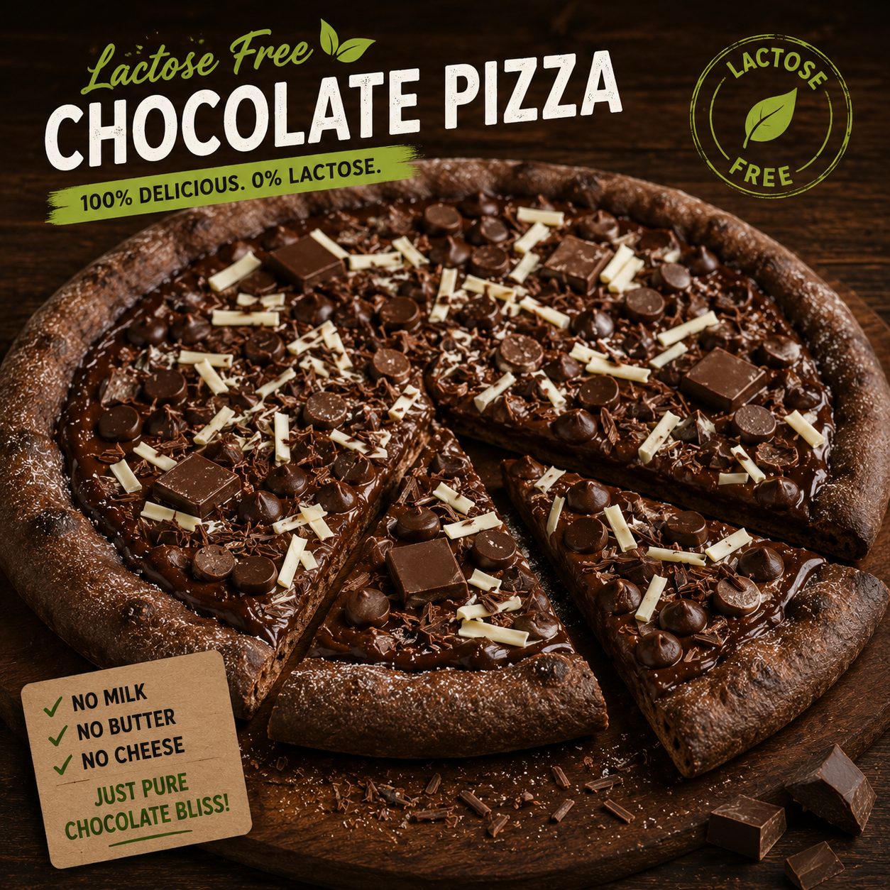

Home
Sweet Chocolate Dessert Pizza

Description
Who says pizza has to be savory? This rich, indulgent chocolate dessert pizza swaps out tomato sauce and mozzarella for a velvety layer of melted chocolate hazelnut spread, chopped dark chocolate, and fresh berries on a warm, golden-baked crust.
Crispy on the edges and gooey in the center, it is the ultimate crowd-pleasing treat that comes together in just 15 minutes.
Ingredients
- 1 pizza dough ball
- 1 tablespoon melted butter
- 1 tablespoon granulated sugar
- 1/2 cup chocolate hazelnut spread (like Nutella)
- 1/2 cup dark or milk chocolate chips
- 1 cup fresh strawberries, sliced
- 1/4 cup white chocolate chips (for drizzling)
- Optional toppings: mini marshmallows, crushed hazelnuts, or fresh raspberries
Steps
- Preheat your oven to 220°C (425°F) and line a baking sheet with parchment paper.
- Roll or stretch the pizza dough into a circle on the parchment paper.
- Brush the dough lightly with melted butter and sprinkle the granulated sugar evenly over the surface.
- Bake the plain crust in the preheated oven for 8–10 minutes until puffed and golden brown.
- Remove the hot crust from the oven and immediately spread the chocolate hazelnut spread evenly across the center, leaving a small border for the crust.
- Scatter the dark chocolate chips over the warm spread so they gently melt.
- Arrange the sliced strawberries and any optional toppings on top.
- Melt the white chocolate chips in the microwave in 15-second intervals, then drizzle over the pizza, slice, and serve warm.